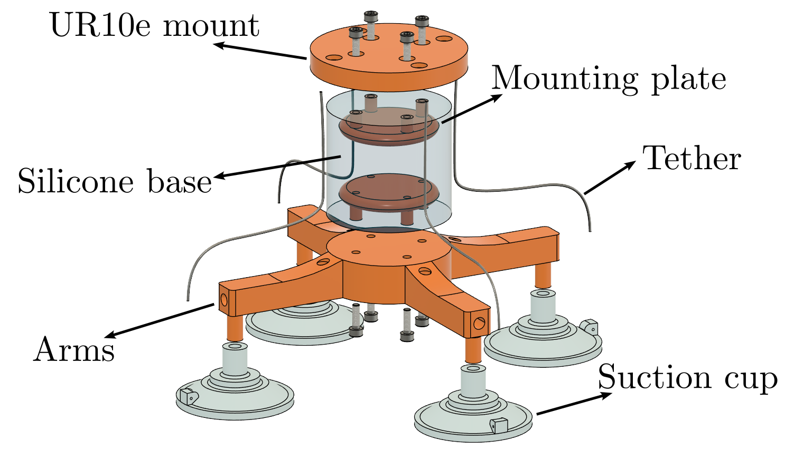
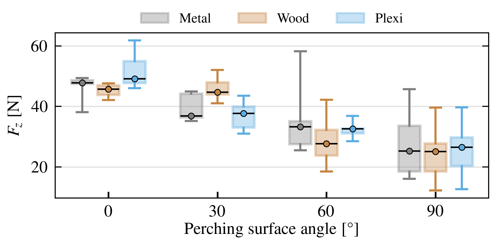
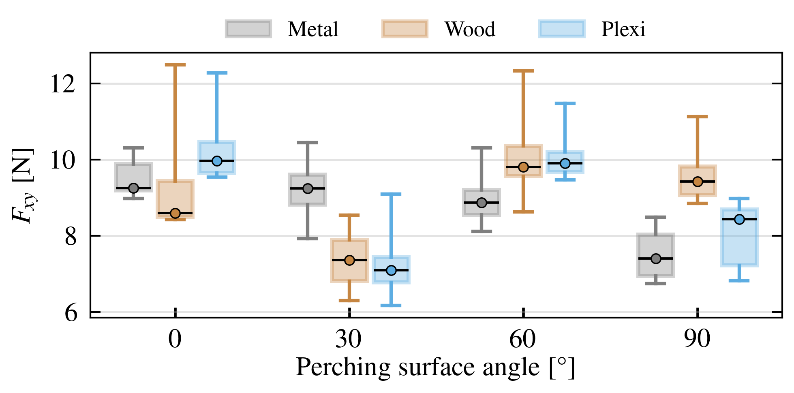
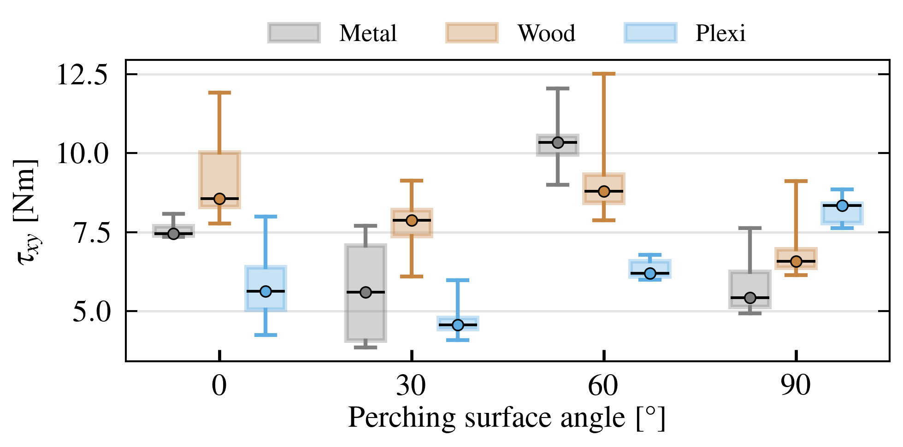
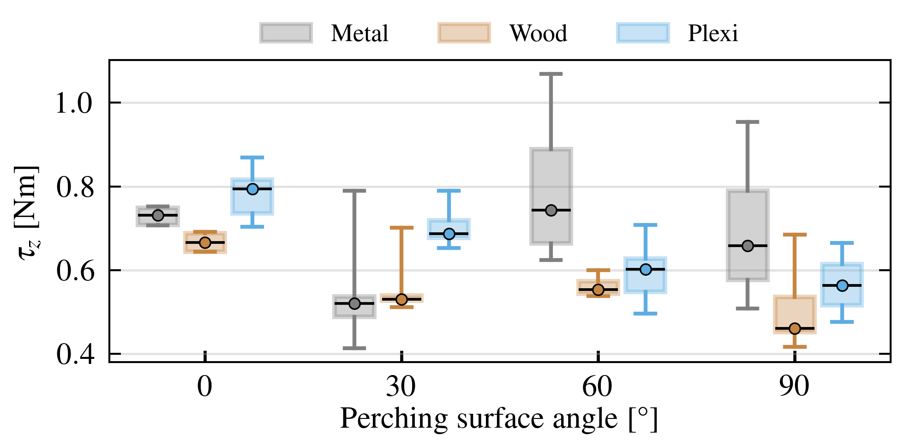

Timelapse of the UAV perching, release, and takeoff cycle under approach misalignment.
Timelapse of the UAV perching, release, and takeoff cycle under approach misalignment.
We present SPLAT, a passive soft-base suction gripper for repeatable attachment to smooth and semi-smooth surfaces in robotic manipulation and aerial perching. The gripper combines a compliant silicone base, passive suction cups, and a host-actuated tether release mechanism to achieve a lightweight, simple, and broadly deployable design without dedicated end-effector actuators or valves. Structural compliance improves tolerance to contact uncertainty and misalignment, while relative rotation of the base enables repeatable passive release. A reduced-order analytical model is developed to relate torsional compliance, release torque, and suction-based load capacity to key design parameters. The system is validated experimentally through torsional identification, load-capacity tests on multiple surfaces and inclinations, misalignment analysis, and demonstrations with a UAV and a robotic manipulator. Reliable UAV perching at approach misalignments of about 20° demonstrates the robustness of the proposed design under realistic contact conditions.
Keywords: soft robotics, passive gripper, attaching, aerial perching
Passive soft-base suction gripper — SPLAT attaches and detaches reliably without dedicated end-effector actuators or valves, making it a simple plug-and-play mechanism for different robotic platforms.
Misalignment-tolerant compliant design — The Ecoflex silicone base provides multidirectional elastic deformation, enabling reliable suction cup sealing even under moderate angular and positional contact errors without active sensing or control.
Comprehensive experimental validation — Results include torsional identification, load-capacity tests on multiple surfaces and inclinations, misalignment analysis, and live demonstrations with a UAV and a robotic manipulator.
SPLAT consists of a compliant cylindrical soft base (Ecoflex 00-30 silicone, ⌀45 mm × 50 mm), an X-shaped rigid PET-G arm structure carrying four custom-molded suction cups (⌀42 mm, Extrasil RTV-2), and a 0.35 mm tether routed through printed channels. The total gripper height is 95 mm. Both the base and suction cups are cast from 3D-printed molds; the complete fabrication requires approximately 6 hours.
Attachment is passive: surface contact compresses the suction cups, expelling air and creating a vacuum seal. The compliant base damps impact and tolerates approach misalignment. Release is driven by a yaw rotation of the host robot, which tensions the tether, peels the suction cup lip, and breaks the seal — no active valves required.

Exploded view with labeled components.
SPLAT supports two detachment modes depending on which degree of freedom the host robot applies. Mode 1 is the intended, controllable release: a commanded yaw rotation produces near-uniform torsion of the soft base, symmetrically shortening all four tethers and peeling all suction cups simultaneously. Mode 2 is an asymmetric local peel triggered by a roll or pitch disturbance — for example, gravity acting on a tilted surface. This mode may initiate peel in a single cup without causing full release, which improves robustness during attachment. The design selects a large release rotation threshold so that gravity-induced deflections in Mode 2 remain well below the full-release point, and only a deliberate yaw command in Mode 1 triggers controlled detachment.
LABORATORY RESPONSE — ATTACH & RELEASE CYCLE
METAL — 15° TILT
PLEXIGLASS — 15° TILT
SPLAT is designed as a simple bolt-on attachment — no wiring, no pneumatic lines, no dedicated end-effector electronics. The gripper mounts via standard M3 screws on the host robot's flange. A single 0.35 mm tether is the only connection between the gripper and the robot, and it routes through the arm channels entirely within the structure. Release is commanded through a rotation already available on the host platform.
The same physical unit has been demonstrated on a UAV for aerial perching on flat surfaces and on a Franka Emika robotic manipulator for contact placement tasks. Switching platforms requires only swapping the top mounting plate — the soft base, arms, and suction cups are identical across configurations.
FRANKA EMIKA — CONTACT PLACEMENT DEMO
Load capacity was characterized across four loading conditions — pull (normal), shear, tilt, and twist — on metal and plexiglass surfaces at 0°, 15°, and 30° inclinations. Full results and statistical analysis are provided in the paper.
PULL (NORMAL LOAD)

SHEAR

TILT

TWIST

FUSION 360 FILES
Complete parametric models in Autodesk Fusion 360 format. Allows modification, adaptation, and detailed inspection of the design.
STL FILES
STL files for all 3D-printed parts: arms, molds, mounting plates, and suction cup molds. No Fusion 360 required.
If you use this work in your research, please cite it as:
[Author(s). "Title of the Article." Journal Name, vol. XX, no. YY, pp. ZZ, Year.]Citation details will be updated upon article publication.
This work was supported in part by the project "CBRNe HERO" funded by the European Union — NextGeneration EU under Grant NPOO.C3.2.R3-I1.04.0075. The work of doctoral student Jakob Domislovic has been supported in part by the "Young researchers' career development project — training of doctoral students" of the Croatian Science Foundation funded by the European Union from the European Social Fund.
For questions or collaborations:
Jakob Domislovic
jakob.domislovic@fer.unizg.hr
Laboratory for Robotics and Intelligent Control Systems (LARICS)
University of Zagreb Faculty of Electrical Engineering and Computing
Unska 3, 10000 Zagreb, Croatia